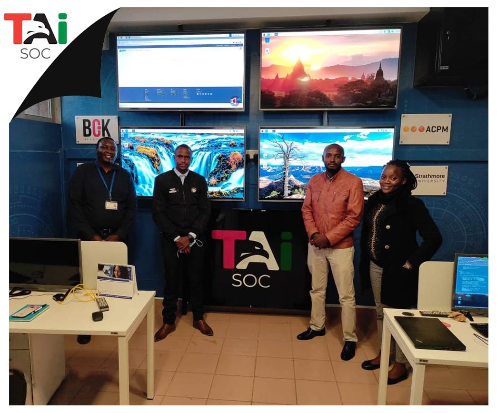

17. April 2021
TAI SOC Information Sharing and Benchmarking Program

The TAI SOC Information Sharing and Benchmarking Program
According to Business Daily, cyberattacks on Kenyan organizations increased by roughly 50% in the months leading to 2021 compared to the previous year. According to data from the Communications Authority of Kenya, the highlighted increase was 56 million cyber threats, up from 37.1 million in 2019.
The rise can be attributed to a number of factors, including the significant shift to online operations and the current economic climate. This means that organizations must do more to protect their technological infrastructure from common attacks and to make themselves a difficult target. In what way? Cybersecurity can be improved by directing more attention, resources, and tools toward Threat Detection and Triage, Cybersecurity Audits, Staff Awareness and Education, and Regulatory Compliance.
While we encourage businesses to outsource their cybersecurity needs to us, it is understandable if a client wishes to deploy an in-house Security Operations Center or other corresponding Security Infrastructure. TAI SOC ensures that others are guided through the rigorous process by sharing vital information and resources needed to set up and inviting client staff to visit our on-site setup.
This was the case for one of our clients, Stima Sacco, who came to see us at our TAI SOC on 8th Thursday. We had a demonstration to go over our implementation, and we shared the key factors to consider when getting started. We also provided advice on day-to-day operations such as staffing, scheduling, and issue ticketing. Overall, this was the first of many meetings we hope to have. As TAI SOC has some academic roots, we hope to impact the market with our solutions and make strides in actionable threat intelligence from us and collaborations with others in our field.

If you are interested in having someone answer any questions and show you a demonstration of how the TAI SOC product can help your organization solve its challenges please visit our website and fill in the form found at the link below.